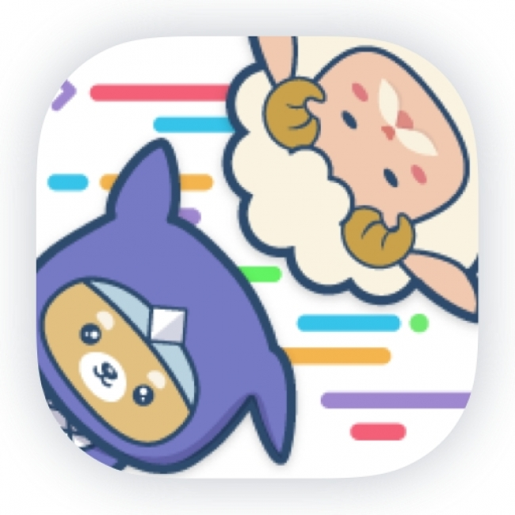

作品集

Progate
ProgateのRails講座にはまり、計4週してしまいました。 途中、ローカル環境でも動かしたいと考え、環境構築し、 作成してみました。 その後、Rails Tutorialへ移行しました。

Rails Tutorial
Rails Tutorialのアプリを作ってみました。 Rails Tutorialを計3週しましたが、 自分が作りたいものを作った方が 理解が深まるなと考え、インスタのクローンアプリを作ることにしました。

Instagram クローンアプリ
インスタ風のサイトをつくりたいなと思って作りました。 参考にしたサイトではHamlで書かれていたので、ERBに直すのに 少し苦労しました。 simple_form/paperclip等のgemも用いてみて、便利さを実感しました。
簡易ECサイト
ECサイトを作ってみたくて、作りました。 gem deviseを初めて使ってみて、便利さを知りました。 ただし、IKITTOKEIでは勉強も兼ねて、ログインも自作しました。